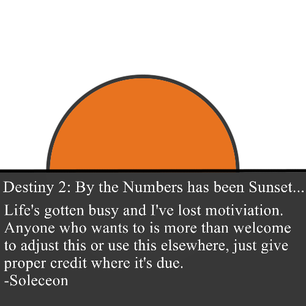
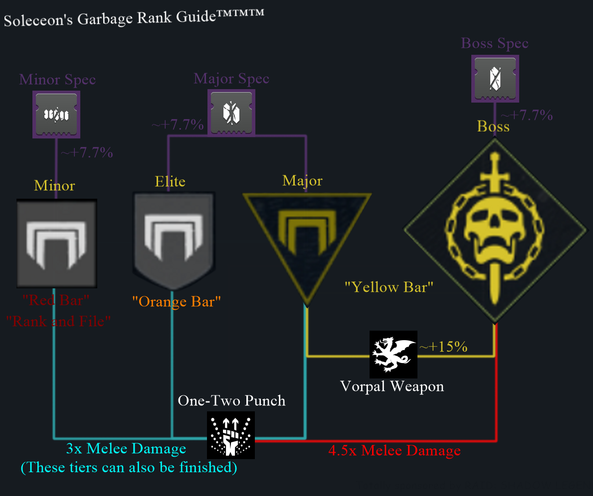

Though it may come back one day… And slight adjustment, I won’t be giving control/edit perms of this over but you’re more than welcome to copy/paste and continue on. Enjoy.
Document Overview:
This document aims to record the specific effects of each and every individual weapon perk that exists in the game, what effect it has on the weapons and any unique or non-stated quirks. Some of these are significantly harder to quantify as it simply “Increases” a hard to measure statistic, such as bullet magnetism or stability while shooting. Exotic exclusive traits aren’t listed here (for the time being), nor are pinnacle weapon traits.
Weapon Stats Overview:
Each weapon in the game has a set list of statistics that affect how it performs. The majority of these traits are displayed on the weapon itself, though some are hidden within the code of the game. These can be found in external resources that are able to look at the Destiny 2 API, such as light.gg, Destiny Item Manager and others. Similar to perks, some statistics are harder to properly quantify than others or are relative to their own archetype.
Not all weapons have all the same statistics, for example Grenade Launchers and Rocket Launchers have a blast radius as they’re explosive, but Hand Cannons don’t because they’re a projectile. Further, the in game version of these stats are obfuscated with only a sliding bar, and typically the rate of fire (or analog for the weapon) and magazine size being the only one numerically listed. Below is a comparison of Arbalest Thorn as it’s shown in game and as it’s (somewhat simplistically) shown in the API display on DIM.
The comparable stats are still the same, but the numbers added to give more clarity to what exactly is going on. In this case, the info displayed also shows the Aim Assistance value of the weapon, the zoom and recoil direction as well. More on these later.
What each stat does:
Displayed stats:
- Impact: Handles the direct damage of each individual round, comparable to the weapon/archetype. Higher Impact = more damage that each shot does.
- Range: Affects the range of a weapon before it hits drop off
- Accuracy: (Bows only) affects the accuracy of each shot.
- Blast Radius: (Explosive weapons only) Affects the size of the explosion. Note: Has a different effect for both Grenade Launchers and Rocket Launchers
- Velocity: (Explosive weapons only) Affects the speed of the launched projectile and how fast it moves.
- Stability: Affects the recoil severity of a weapon while firing, different from the natural recoil direction of the weapon.
- Handling: Affects the time it takes you to take out your weapon, stow your weapon or to aim down the sights of the weapon.
- Reload Speed: Time it takes to reload the weapon.
- Rate of Fire/Charge Time/Draw Time: How fast your weapon fires/time it takes to charge a shot/how long it takes to knock an arrow.
- Magazine: How many shots are in your magazine.
Hidden Stats:
- Aim Assistance: Super complex stat, but effectively changes how “sticky” your aim with the weapon is on controller as well as “Bullet magnetism” for both controller and mouse and keyboard, which can effectively curve bullets towards targets and crit spots on targets (usually only noticeable in PvP content.
- Recoil Direction: The direction most shots are going to travel while trigger is being held down/likely direction your next shot will go.
- Weapon Size: The amount of ammo the weapon has in reserves, is hard to actually piece out what exactly the number correlates to per weapon and is archetype specific, so only really useful when comparing identical archetypes of weapons.
- Zoom: Zoom magnification of your weapon.
Complex/Weird Stat Explanations in Depth (FOR NERDS ONLY):
Blast Radius on Grenade Launchers:
As noted above, there’s a small problem that comes with the blast radius statistics on weapons. Effectively, as one increases the blast radius of any grenade launcher in D2 (rockets play by a different rule set), it alters the damage weighting of the weapon itself. Now, while this number will ideally always be weighted the same overall (say for example a GL does 500 impact and 1,000 blast, changing blast radius to a lower size may shift it to 1,000 impact and 500 blast). This has an effect for boss based DPS as you can technically crit the impact damage*, but not the explosive, meaning for fighting healthier bosses and raid bosses you’d want as low of a blast radius as possible for boss damage. This does have a significant effect when coupled with Spike Grenades.
*Note on this: The damage DOES crit, however it doesn’t display in the normal yellow color you’d otherwise see. The projectile itself doesn’t have a bonus crit modifier, but is affected by any crit modifier that an enemy has. Crits and precision damage will be explained a bit more in depth later on.
Blast Radius on Rocket Launchers:
Because life can’t be simple, Rocket Launchers actually have a DIFFERENT rule set for blast radius and its damage. That being said, it’s a lot more simple in that the damage ratio is 1:3.5 for Impact Damage to Blast ratio. For every one point of damage done via impact it does an additional 3.5 blast damage. This is calculated BEFORE any other perks by the way, so perks like Impact casing and killclip don’t affect this ratio.
There’s a somewhat debated argument on whether Blast Radius has an effect on the spacing of the perk Cluster Bomb, I’ve been unable to find any concrete proof of this I have seen that it does seem that it does have a very slight affect to it. If there is any mechanical change to this, it’s not worth the time to try and alter it.
Aim Assistance:
Aim assistance is a bit of a hard perk to really quantify. Long and short of it is that the higher the number the more forgiving the weapon is for trying to kill enemies. In PvP content, this is a bit more easily seen, and if you want a good example of how strong this really is look up videos of pre-nerf Queenbreaker in Gambit. This isn’t really a changeable statistic outside of some VERY specific perks, and is more of an innate stat. It also operates differently on controllers wherein your “stickiness” is increased and it makes it easier to follow targets.
Accuracy:
Accuracy, at least as defined by the game, is rather… weird, yet straightforward. Essentially, it’s a non-listed stat (even on the actual stats of a gun). It’s the “bloom” of a gun while firing, the tightness of the cone of where a bullet or shot will go, different from recoil direction. With each shot fired for most weapons (mainly ones with bust higher fire rates) the accuracy/bloom of the weapon gets worse, meaning less shots are close to your cursor or center of your screen. This differs functionally on weapon to weapon. For example, with Fusions an increase in accuracy decreases the spread of each bolt in couple with it’s recoil. This has a much more obvious visual effect when hip-firing, as virtually all scopes or sights in this game omit this information (do note, aiming down sights also increases the accuracy of the gun significantly)
Recoil Direction:
Recoil direction is the general direction that a gun will deviate towards if uncontrolled, for example if a gun’s deviation is diagonally left, if you kept firing without controlling the majority of shots would travel diagonally left from where you first aimed. This can be corrected by countering the recoil direction of the gun. Using a series of info generated originally by this post, we have a much more clear idea of exactly how recoil direction works now. While there’s a fancy graph and a wave function that shows it, the best way to really see it is in some lovely API designs created by the community, which will show a half circle and give you an idea of the general direction. This can be seen in DIM and Ishtar Commander.
Zoom:
Zoom widely varies from weapon to weapon and scope to scope. With some lovely testing by u/gintellectual that shows how zoom works and in general how it affects weapons and damage in the game. Tl;Dr: Zoom affects damage dropoff while scoped in and flinch. That’s it. For a more in depth explanation, each “scope” a weapon has (if it has one, such as for scout rifles, sniper rifles, pulse rifles, etc.) adds in additional range to the weapon. Each gun has a base zoom level, and when you add in the value granted by a scope it gives you the total “zoom” of the weapon. While I’ll go in depth about how much each scope adds to the “zoom” levels of each weapon later on in here, all you need to know is that if you want to optimize your range using any weapon, aim down sights and boost up the scope you’re using.
Sword Impact Cap/Swords-as-Melee:
What determines a sword’s damage is the Impact stat, and as a note on visual response in game you’ll actually hit a “cap” as far as the UI tells you. If you’re swapping perks around on them and see no increase, the sword will do more damage but is visually capped at 95 impact. Additionally, an unempowered sword counts as a melee for the purpose of kills and effects for other weapons (see: One-Two Punch). While this isn’t terribly useful on its own, it’s helpful for any bounties that require melee kills with an element.
Fusion Rifle Charge Time:
The majority of masterworks in Destiny 2 don’t have any downside to them, often increasing a stat in exchange for investment in it. However, for Fusion Rifles there is a notable downside of as you decrease charge time you decrease impact. Depending on how much you value this perk will affect your value from the decreased impact, but in PvP it may be the difference between securing a kill with a single burst or getting one off a shot before you’re downed yourself.
Enemy Tiers:
In D2, enemies come in several different flavors. While normally inconsequential beyond “How much damage can these soak?” the ranking does have an impact on how some perks and weapon mods function. You’ll find more info down below on these perks and mods but here’s a quick infographic to explain some stuff. Important to note: Rather than paying attention to the color of the health bar it’s more important to pay attention to the shape next to it.
Understanding This Guide
Each perk listed here will be made to inform the player of what it does. Not which perk is “better” as it’s largely up to personal playstyle and and builds that can really determine it. While some perks are factually going to be “good”, many perks are useful in specific builds or for specific playstyles. For example, No Distractions, a sniper rifle perk is good for those who like to “hard scope” in PvP, but not as useful for those who prefer “quick scoping”.
Much of the information listed here should be correct. That being said, anything and everything is prone to change, and many of the perks lacked any real documentation prior to writing this guide (that I could find), so a portion of the testing was done by me using various methods. Testing methods will be listed at the bottom of the document below perks, but if you have concrete repeatable proof that I’m wrong on something do send me a message and I can edit out the incorrect information and give credit.
Some perks are omitted from this guide, which will mostly be magazine, barrel and scope based perks. The reasoning behind this is simple: They don’t necessarily change much about the gun in an impactful manner. Yes, they do have an affect but many of them are in the vein of “+5 range” or “+10 range, -5 stability” where they do change how the weapon operates, but including them in here would horribly bloat the info within this guide, as well as the fact that the impact of them is going to vary wildly between each archetype of weapon. In the case of scopes, they also tend to be much more of a player preference thing (do note, however, that a higher zoom scope does increase range while ADS, but is effectively universally true for all of them). Additionally, such info can be found within API using sites and tools like DIM, and you can get a clear idea of what they change in there.
However, if a perk normally live in this category but provides a significant change in functionality to a gun, it will be recorded and listed here as it’s much more tangible in play or drastically affects the weapon, such as the case with Drop Mag or Full Choke.
A note on Reload Speeds:
Reload speeds in this guide, and for perks are… inconsistent to say the least. There’s a LOT more work to be done on this, but the fact of the matter is that there’s not exactly a solid method for giving an exact increase for each perk. The base reload speed of a weapon is tied to the weapon archetype, meaning that even if two weapons have the same reload speed number they’ll have different reload timings if they’re different archetypes. This also extends to reload speed increasing perks, be they numeric buffs that increase it by X points or if it’s a conditional reload buff. For example, Feeding Frenzy and Alloy Mag both give different numeric values that range widely depending on what weapon they’re on. Additionally, Snipers and Shotguns have two special “rules” that I’ve found for dealing with reload and reload perks, Snipers can’t fire immediately after being reloaded (technically) and have a bit of a cooldown after the fact. Shotguns get their own special rule for reloading based perks, where the first shot loaded is slower than the rest if a perk is active. For example, a Feeding Frenzy Imperial Decree shotgun normally will take 25 frames at 30 FPS to reload each shell if the perk is inactive, however if the perk is active the first shell will load at 21 frames and subsequent shells will load in 12 frames. This is also true of other perks. Most of what’s provided is either the “Average” or the lowest recorded repeatable number. While hopefully the guide can be perfected in the future with all possible numbers for all possible archetypes, it currently can’t due to data limitations. As such, I’m using a grading system to make the values and potency of these perks much more clear and to avoid confusion. These values are also used for handling as well.
S - Maxes out or nearly maxes out the boosted valueof a weapon.
A - Highly potent effect BUT doesn’t max out the boosted value of a weapon.
B - Appreciable boost, but is outclassed by other perks.
C - Slight boost, but is easily outclassed by other perks.
Main Weapon Perks:
Air Assault
- Gain increased handling while airborne.
- While in the air (either by jumping, being held up by an ability or falling) you’re able to pull out, stow or aim down the sights of your weapon slightly faster with this perk.
- C rank Handling speed increase. The effect is there but isn’t particularly potent. (Note: SUPER small data pool)
Ambitious Assassin
- Overflows the magazine based on number of rapid kills before reloading.
- Ambitious assassin does what it says on the tin, the more kills you get in a short time frame before reloading the weapon the more ammo your next magazine will hold. Exact numeric values for this weapon change
- Per kill of the weapon, you pull an additional 10% (rounded up) from your reserves into your magazine. This caps out at 5 kills with 50%. For example, a weapon that has 15 shots with one kill would reload to 17, as the base 15 + 1.5 (rounded up to 2) would overflow the magazine. This applies to any weapon with this, including Rocket Launchers (capping out at 2 rockets loaded).
- Additional Notes: though the perk seems to indicate multiple kills being needed, killing a single enemy activates it with a 10% magazine overflow.
Archer’s Tempo
- Draw time decreases after every precision hit.
- One of the better perks that exists for bows, it rewards the natural high-precision design of the weapon by decreasing the draw time for each precision hit you manage to land. This makes it easier to get kills in rapid succession as well as more sustained DPS.
- Alters the draw speed of a bow to 440 ms once active (credit to Pip1n)
Assassin’s Blade
- Sword Kills boost movement speed and damage
- Killing an enemy grants you an additional 15% damage for the next 5 seconds, movement speed is increased but it’s a bit hard to determine the exact value.
Auto-Loading Holster
- The holstered weapon is automatically reloaded after a short time
- Any stowed weapon with this perk will automatically reload after 3 seconds of storage to its maximum natural capacity.
Backup Plan
- Grants reduced charge time and increased handling speed for a short time immediately after swapping to this weapon.
- Due to the changes that came with 2.8.0, backup plan works in a direct fashion. Now, fusion rifles under this effect have their charge time reduced to ~540-500 charge time for a single shot (official wording is that it changes it to a rapid-fire frame while firing). This means that the impact also gets reduced depending on the charge time of the given weapon. The handling is also boosted to A Grade after being stowed for 4 seconds.
- As a mildly entertaining side effect, the weapon Critical sass has an unusual interaction with this as it is a Rapid-Fire frame with backup plan, where if it’s at the 540 charge time loadout it loses 3% damage but if it’s at the 500 charge time loadout it gets literally no benefit beyond the handling increase.

Bottomless Grief
- While you are the last living member of your fireteam, each takedown refills your magazine.
- Each kill while this perk is active/you are the last living member of your fireteam will completely refill your magazine to its maximum natural capacity

Box Breathing
- Aiming this weapon for a short period without firing grants bonus range and precision damage that resets after firing or exiting zoom.
- After aiming down sight for 1.5 seconds, you gain an increase in damage to precision damage only. Non precision damage isn’t affected by having the buff active. Damage buff is dependent upon what archetype of weapon you’re using. [Note: Seems to have been shadowpatched at some point to make values much more in line with each other. Thanks to u/FairlyFaithfulFellow for bringing this to my attention]
- Rapidfire Frame Snipers: 1.305x
- Adaptive Frame Snipers: ~1.33x
- Aggressive Frame Snipers: ~1.33x
- Precision frame Scout Rifle: 1.66x (Source: CoolGuy’s Vid)
- Linear Fusion Rifle: ~1.33x
Celerity
- Gain the following effects while you are the last living member of your fireteam.
- Increased target acquisition
- Increased handling and reload speed
- Reduced flinch from incoming fire
- The effects from this are EXTREMELY potent. Thanks to the ever awesome CoolGuy (because I’m absolutely garbage at PvP and can’t get a team for Trials that can carry me)
- The Handling affect is S grade, matching the effects of Quickdraw (but doesn’t stack with it)
- The reload speed is on par exactly with an enhanced reload perk and stacks with it.
- Both the flinch reduction and target acquisition boost are substantial, though again it is hard to properly measure as these are, well, much harder to measure in some regards.
- There’s also a hidden aspect to it as well: Highlighting targets viewed through the scope of the weapon. While it doesn’t grant a direct benefit it makes it somewhat easier to keep track and aim on target.
- There’s a secondary hidden effect as well, and that’s the fact that similar to MIDA’s “MIDA Radar” or Knucklehead Radar’s “Upgraded Sensor Pack”, Radar stays active while you’re aiming down sights with the perk active.
Chain Reaction
- Each final blow with this weapon creates an elemental damage explosion.
- So far in testing, exact values for how much damage this does has been fairly inconsistent, as it’s hard to get specific numbers or properly measured and metered setups as it’s a fairly chaotic perk. It has shown to be quite potent in regards to increasing add-clearing damage so long as you’re able to get kills with it, however.
Clown Cartridge
- Reloading this weapon randomly overfills it from reserves.
- Overfills the magazine by up to 50% (rounded up) on a reload, loads in at least one shot on a reload (note: this number will become MUCH more accurate once I can get the new Seraph LMG with Clown to test with)
Cluster Bomb
- Rockets spawn cluster bombs upon detonation.
- Each shot made with a rocket with this perk generates 8 additional cluster bomblets that spread out from the main impact site. Each one of these bomblets deals roughly an additional 3% damage, if all 8 manage to connect with both impact and explosion it’s an overall 24% damage per shot increase (though this requires a lot of luck to achieve). Regardless, it’s a straight damage increase with no drawback over base damage and increases the area of damage for the weapon for area clear as well.
- While there are claims that an increased blast radius increases the spread of Cluster bombs, I haven’t been able to find genuine concrete evidence of this in testing. While it appears that there’s a change, it’s likely only slight in overall spread. With the randomness of the clusters themselves, it makes it hard to genuinely say whether this truly exists or not or is merely a product of research bias.
Counterattack
- Blocking an attack immediately after guarding increases damage for a short duration.
- Grants a blanket 50% damage increase to all outgoing damage for 2 seconds,
- Credit: Aztecross Gaming for numbers used originally. He’s thorough and the gods are fickle things that didn’t want to give me a Counterattack sword. Updated with new values from our lord and savior bungo.
Demolitionist
- Kills with this weapon generate grenade energy. Activating your grenade ability reloads this weapon from reserves.
- This is one of the few perks that changes based on general weapon type. If the kill is made using a Primary OR Heavy weapon, you regain 10% per kill. This scales regardless of cooldown for your guardian (I.E. base 82 second cooldown guardian will get ~8 second reduction, a 50 second grenade cooldown guardian would get a 5 second reduction on their timer).
- Special weapons (Shotguns, Grenade Launchers, Snipers, etc.) regain 20% per kill instead. These numbers aren’t affected by multikills or general weapon type beyond the ammo type used.
- Multikills don’t affect this with any sort of multiplyer, however you do receive full credit for any kills made with weapons like a Rocket Launcher or Grenade Launcher.
Disruption Break
- Breaking an enemy's shield with this weapon makes them more vulnerable to Kinetic damage for a brief period.
- Grants Kinetic weapons a 50% damage increase for the next 5 seconds after breaking an enemy’s shield.
- Note: Operates identically on Arbalest, where it’s technically easier to use due to its innate kinetic nature.
Dragonfly
- Precision kills create an elemental damage explosion
- Dragonfly is one of the more annoying perks in the game numerically, it only cares about the overall type of weapon used, rather than archetype or ammo type. What this means is that for each weapon type (auto rifle, hand cannon, sniper, etc.) there’s a specific damage number that all archetypes and damage per shots wind up with. The calculated modifiers of “Base Body to Dragonfly” are below. It’s compared to base body damage of an enemy before modifiers and are the maximum explosive damage dealt (effectively as close as possible to source). For example, a Nation of Beasts hand cannon does 1,016 body damage, and it’s maximum explosion damage is 1,845 (same as all hand cannons), giving a ratio of 1.82x the body damage as explosive damage. Further explanation of this is down in the testing segment. (Red numbers are from archetypes I couldn’t find/get). A note on scaling: Empowerment and perks (like Minor spec) increase the damage of the explosion, but weapon perks (like Rampage) have no effect.
- Dragonfly numbers.
- Lightweight: 0.987x body damage.
- Precision: 0.839x body damage.
- Precision: 2.222x body damage.
- Adaptive: 1.816x body damage.
- Ace of Spades operates off of the dragonfly perk’s numbers itself, as a side note.
- Precision: 2.11x body damage.
- Aggressive: 0.537x body damage.
- Adaptive: 0.645x body damage.
- Lightweight: 2.767x body damage.
- Precision: 2.482x body damage.
- Veist Rapid-Fire: 3.396x body damage.
- High-Impact: 2.210x body damage.
- Pulses (Calculated as all individual shots from each burst as base body damage)
- Rapid-Fire: 6.498x body damage.
- Lightweight: 5.864x body damage.
- Precision: 4.954x body damage.
- Precision: 0.512x body damage.
- High-Impact: 2.522x body damage.
- Chromatic fire actually doesn’t grant Dragonfly effects to any weapon, the explosion granted is actually notably more powerful, closer to a Dragonfly+Dragonfly Spec. weapon. While functionally identical, the effect is more potent and (as evidenced by Ace of Spades) can trigger on top of other dragonfly effects (were we to get them on Kinetic weapons in the future) Note: Just a thing that I noticed while testing Dragonfly. I need to do a LOT more research into this before any real conclusion can be drawn)
- Odds are, a lot of the info in this is outdated by now, or is incomplete. As sunsetting has rolled in, it’s made it harder to get information, and made it less valuable. If in the past, you’ve given me info for archetypes (even if it didn’t make it in here), I wanted to extend a thank you for your assistance with furthering this guide’s goals. You’re all great in my eyes.
Dual Loader
- Reloads two shells at a time, but reduces reload speed.
- Reduces Reload stat of the weapon by 50 points
- In testing, this routinely showed to be better in pretty much all aspects overall for loading except for value from the first reload. That is to say: It led to overall higher uptime for weapons, but if you needed to reload once (say, for getting a single shell in in Crucible) it fell behind time wise, but only by around ⅓ of a second.
Dynamic Sway Reduction
- When holding down the trigger, this weapon's sway-reduction system boosts accuracy over time.
- While this post (sort of) shows the effect of this perk, It doesn’t really convey exactly what this does. Referring to my primer on accuracy above, the function of Dynamic Sway Reduction is that it more or less completely eliminates (or at least heavily reduces) the increased bloom that comes from firing the weapon. Normally, you’d have decreased accuracy while sustaining fire, but this heavily mitigates that problem.
- The perk itself kicks on usually within the first three shots of a weapon, which given the fact that most of these weapons are firing at extremely high RPMs means it’s almost instant.
- For those curious to see this affect, use a Dynamic Sway Reduction weapon and fire from the hip (where it’s most visually obvious), the bloom reticle won’t change until you stop firing, wherein it’ll pulse out before returning to normal indicating that the perk is no longer active.
- Additionally adds +10 stability over time.
Elemental Capacitor
- Increased stats based on the currently equipped subclass.
- [Solar] increases reload speed
- [Arc] increases handling
- [Void] increases stability
- Grants +50 Reload Speed, +50 Handling and +20 Stability respective to the classes. Has no effect if using Stasis.
En Garde
- Quick attacks immediately after swapping to this sword do additional damage.
- Increases your swords damage by 1.3x for the next two seconds after taking it out. The time it takes to prep this is almost negligible at one second needed from stowing to gain the effect. The perk typically lasts long enough for you to get two light attacks in.
Energy Transfer
- Guarding while receiving damage generates class ability energy.
- Hard to numerically quantify as identical numbers returned different results. For reference, on a Warlock blocking with this sword, a single Hand Cannon shot (dealt 14 damage while blocking) returned 75% of the Rift energy. The more damage that’s dealt the more energy is refunded, but even then it appears that the required damage is relatively low for a high return on the value. (Note, haven’t updated this yet because it’s a pain to test)
Explosive Head
- Arrows explode after a short delay.
- Explosive Head reduces the normal impact of a bow to half its impact, but in exchange gives explosive damage equal to ~1.3x half the normal damage of the lost damage. This leads to an overall increase of ~1.15x the normal damage of the bow for body damage and ~1.10x for crit damage.
- Credit to u/Vitfall for this info.
Explosive Payload
- Projectiles create an area-of-effect detonation on impact.
- Explosive Payload reduces the normal impact of a shot to half its impact, but in exchange gives explosive damage equal to ~1.3x half the normal damage of the lost damage. This leads to an overall increase of ~1.15x the normal damage of the shot for body damage and ~1.10x for crit damage.
- Credit to u/Vitfall for this info.
Eye of the Storm
- This weapon becomes more accurate and boosts handling as your health gets lower.
- Activates around the ~55% health remaining mark (estimated visually). Stays until you typically regen to ~70%
- B grade handling boost (note, small number of frames and small pool makes this difficult to soundly say but it’s what I’ve found so far.)
- Lower health doesn’t seem to boost this further, unlike Underdog.
- However, lower health DOES increase accuracy of this perk substantially for those using controllers.
Feeding Frenzy
- Kills with this weapon increase reload speed for a short time.
- Scales based on the number of rapid multikills before reloading.
- With 2 kills, reload speed is equal to updated Outlaw.
- With 3+ kills, is faster than Outlaw.
- With 4+ kills, is the fastest reload in the game (except Alloy Mag).
- Max possible reload duration scale of 0.8.
Field Prep
- Increased ammo reserves. Faster reload, stow, and ready when you're crouching.
- Adds +50 to the reload stat while crouched
- Reserves increase: Changes depending on weapon type, and I actually don’t have much in the way of comparable weapons and reserve perks (for now).
- Shotguns and Snipers: 1.5x effect of reserves.
- Fusions: 1.33x effect of reserves
- Breach Grenade Launchers, Drum grenade launchers and Rocket launcher: 1x effect of reserves.
- Primary weapons: Not exact, but rounds to around 3x effect of reserves.

Firing Line
- This weapon deals increased precision damage when near two or more allies
- Precision damage is increased by 1.25x base, has no effect on your body shot damage. Requires two allies nearby you to activate (which is essentially anything with a blue bar, friendly guardians, the fallen in the Spider’s mission and even the “enemies” when you invade in gambit. If it’s blue, you can proc the perk.)
Firmly Planted
- Increased accuracy, stability, and handling when firing while crouched.
- B grade handling increase
- Credit to CoolGuy on his information for this. On top of significantly increasing accuracy on controllers, it also increases recoil direction of the weapon you’re using substantially. (Sliding technically counts as being crouched for the purposes of this. Credit to u/lonbordin, while I knew this I omitted it because I thought it was known but his information was used elsewhere, and this was the only place I could put this in without causing formatting problems)

Flash Counter
- Melee blocked immediately after guarding disorients and weakens the attacker.
- Credit to Azteccross for this, increases damage by 20% for around 6-7 seconds but seems to act as a buff rather than a debuff.
Fourth Time’s the Charm
- Rapidly landing precision hits will return two rounds to the magazine.
- Essentially what it says on the tin. Getting 4 precision shots off on an enemy will generate 2 additional rounds for you, directly into the magazine.
Frenzy
- Being in combat for an extended time increases damage, handling, and reload for this weapon until you are out of combat.
- While in the “Frenzy” state, you deal an additional ~20% increase in damage. This damage state is shared across all weapons, even those stowed (as in: you don’t need to use the weapon to activate the perk)
- The state is activated by being damaged by an enemy or dealing damage within a ~5-6 second period. If you stop receiving or dealing damage for ~7 seconds once the perk is active, the perk will cease to function.
Full Auto Trigger System
- Holding down the trigger will fire this weapon at full auto.
- Referencing Fallout Play’s (Do note, this is actually outdated. Explanation below) video here for a basic idea, full auto doesn’t have any impact on the majority of weapons outside of reducing human error for optimal fire rates.
- For shotguns only, they provide a 10% increase in fire rate. The video above is from a patch prior to 2.2.0 where the changes were made, and there’s currently no real downside to this other than missing out on conflicting perks as far as column restrictions go. This RoF change rounds to the nearest 5 mark on fire rate.
Full Court
- Increases detonation damage as the projectile travels further before exploding.
- At 50m you do an additional 24-25% extra blast damage, impact isn’t affected by this in any way shape or form. This scaling damage doesn’t start until 10m (and doesn’t scale past 50m)
- For every 1m beyond the 10m mark, it’s an increased .625% damage. There’s no “magic point” where damage bumps up. Do note, most encounters for boss fights tend to take place around the 25m mark (in my experience)
- Full Court only affects the blast damage of a grenade rather than the entirety of the damage model. If you wanted to maximize this effect, increase blast radius as much as possible.
Genesis
- Breaking a combatant's shield with this weapon fills its magazine from reserves. Energy weapons regenerate ammo on hit when matching the damage type to the combatant's shield.
- Does what it says on the tin. Only three Kinetic weapons can roll with this, The Supremacy, Threat Level and Militia’s Birthright.

Grave Robber
- Melee kills reload a portion of this weapon's magazine. Grants ammo for Primary ammo weapons; reloads from reserves for Special and Heavy ammo weapons.
- The perk text is actually lying here, while it does generate ammo for primary weapons and pulls from reserves for special, it’s consistently the entire magazine that gets refunded instead of partial.
Headseeker
- Body shots landed with this weapon increase precision damage for a short time.
- In PvE, the damage scaling seems dependent on overall archetype of the weapon.
- Adaptive: 1.076x crit damage
- Rapid-Fire: 1.083x crit damage
- Aggressive 1.090x crit damage (Note: this archetype fires 4 rounds, but Headseeker never applies to the 4th round in the burst, even if all three of the others were body shots)
- High Impact: Unknown as I couldn’t get one to drop for me.
- Lightweight: Unknown, as I couldn’t get one to drop for me.
- Do note, this is always an overall damage LOSS when comparing full precision damage to intentionally activating the perk. While it can lead to a technical increase in damage for any situation where your gun’s kick can go up into a crit shot, there’s almost no reason to ever use this over almost any other perk in the same column.
- Fallout Play’s video here goes over the PvP function (and flaws) of Headseeker, wherein while there is a numeric increase for PvP damage after a burst it’s capability to increase damage on a burst is only in the ballpark of +2 Damage to +4 damage depending on weapon archetype. This is effectively insubstantial as the difference that this would ever cause in TTK for any weapon with it is almost non-existent.
High-Impact Reserves
- Rounds at the end of the magazine deal more damage.
- Begins at the 50% of magazine and ramps up from ~12.1% for the first round up to ~25.6% for the final shot(s). Scaling changes depending on total magazine count of the weapon.
- A note on functionality: High-Impact Reserves acts slightly unusually for activation requirements. Effectively, this perk activates when you’re below half of the total magazine size BUT only checks each time you fire a shot. For example, an Auto with a 36 round magazine normally activates at 18 rounds remaining, but if you were to load in 9 rounds it wouldn’t gain the effects of this until you fired the first shot. This aspect doesn’t impact the scaling at all and the damage scale will pick up the total reserve point (in the example above, the 8th remaining shot will do the same damage as it would’ve if it had been a full magazine). (Credit to Xenophilius97, a lovely clan mate and friend for noting this for me)
- This is important in Crucible as you’ll spawn with only two shots in your magazine for special weapons, as such the perk wouldn’t activate until you’ve fired your first shot. Also to note: Scaling on this in crucible is MASSIVELY reduced, estimated at somewhere between 3-5% increase AT MAXIMUM. Small numbers made this annoying to properly test and in some cases you’d only see increased damage numbers on precision blows only, such as with Chattering Bone.
Hip-Fire Grip
- Ergonomic grips that increase accuracy and stability when firing from the hip.
- While hip-firing, adds:
- 1.2x aim assist modifier
- +15 aim assist
- +1.7 degrees precision hip-fire threshold (effectively a more generous cone for hip fire’s bullet magnetism
- Specifically noted to not work on sniper rifles
Impulse
- Massively increases projectile velocity, increases reload speed.
- Provides an effective increase in projectile speed is hard to properly measure and quantify, but it is faster than the baseline. Appreciable effect on rockets, not so much on bows.
- Reload speed bonus is nice, but weaker than many other reload speed perks due to its innate nature.
Iron Gaze
- Massively improves weapon target acquisition at the cost of weapon range.
- Reduces weapon range by 40
- Increases weapon Aim assist by 20
Iron Grip
- Massively improves weapon stability at the cost of reload speed.
- Reduces weapon reload speed by 40
- Increases weapon stability by 20
Iron Reach
- Massively improves weapon range at the cost of weapon stability
- +20 Range
- -40 Stability
Kickstart
- Gain bonus damage and charge rate during a slide after sprinting for a short duration.
- After sprinting, a perk message of “Kickstart Ready” will be displayed, sliding once this message has appeared will reduce the charge time of the weapon and increase the damage.
- Damage bonus is ~20% in both PvE and PvP
- Credit to CoolGuy for info on this because I don’t play trials
Kill Clip
- Reloading after a kill grants increased damage.
- ~33% extra damage in PvP content.
- Lasts for ~5 seconds.
- Only activates on a “natural” reload, any sort of perk or function that reloads a weapon for you (see: Sealed Ahamkara Grasps or graverobber) don’t activate the perk, except for Hunter’s dodge. Can’t be refreshed while the perk is still active :c
- Information credit to Fallout Plays (while I know he’s not the guy who “found” this info, the video is super informative and in depth)
- Note: For Rockets, this only affects the impact damage of the rocket and not the full damage (bringing it from 1:3.5 impact:blast to 1.53:3.5 impact:blast).
Killing Wind
- Final blows grant increased mobility, weapon range, and handling for a short duration.
- Refreshable buff that lasts for a base 5 seconds, during which you gain all three buffed attributes.
- Mobility is estimated to be around +50, weapon range is a % increase that is impacted by other weapon perks and handling is significantly increased as well.
- Referenced CoolGuy’s video on this perk.
Lasting Impression
- Rockets attach on impact and detonate after a delay. Increases blast radius and damage.
- +50 Blast Radius (to a maximum of 100)
- Once attached, rocket detonates after ~3 seconds
- Increases the blast damage of the rocket by 25%, increasing the overall damage of the rocket (between impact and blast) by around ~19.4%. See “Blast Radius on Rocket Launchers” for more info on the split between rocket’s impact and blast damage
Lead from Gold
- Picking up Heavy ammo also grants ammo to this weapon.
- Hard to get an exact value but it seems to grant 1/4th of the base total ammo value rounded up (for example, a weapon that can hold a total of 15 shots between clip and reserves at base will get 4 shots per each brick of heavy ammo picked up).
Moving Target
- Increased movement speed and target acquisition when moving while aiming down sights.
- Increase of 3% movement speed while ADS. That’s not over normal while out of ADS, that’s over the normal movement speed while ADS (which is typically 25% or so slower.
- Hard for me to quantify target acquisition as its impact is on aim assist and “stickiness” for controller/console users, but have heard it’s somewhat noticeable.
Mulligan
- Missing a shot has a chance to return ammo directly to the magazine.
- Estimated to be an approximate 1/5 chance to return a miss shot, while one shouldn’t ever actively try and activate this it is helpful. Doesn’t trigger if you hit an “Immune” enemy.
Multikill Clip
- Reloading grants increased damage based on the number of rapid kills made beforehand.
- Damage Increases:
- ~17% at 1 kill before reloading
- ~33% at 2 kills in quick succession before reloading
- ~50% at 3 kills in quick succession before reloading.
- Lasts for 5 seconds. Note: While it can’t be directly refreshed it does reactivate after reloading with a new stack set based on kills.
- Information credit to Fallout Plays (while I know he’s not the guy who “found” this info, the video is super informative and in depth)
No Distractions
- Aiming this weapon for a short period reduces flinch.
- Takes 1.5 seconds to activate the perk and stays through multiple shots.
- For a solid explanation of how exactly this works, watch Fallout Play’s video on this perk and how it functions. It’s hard to quantify exact numbers, but it does in fact work. Note, in PvE content you’re less likely to get significantly flinched by enemies so you’ll see a difference in general use in PvE activities.
One-Two Punch
- Hitting an enemy with every pellet in a shot increases melee damage for a short duration.
- Gives a 3x melee damage buff and lasts for 2 seconds after landing all pellets. Is removed on a melee or after swapping weapons.
- If the melee target is a Boss type, it instead deals 4.5x This has been tested extensively on enemies that count as “bosses” (including raid bosses).
One For All
- Hitting three separate targets increases damage for a moderate duration.
- After hitting 3 enemies, gain a +35% damage buff for 10 seconds.
- This timer persists even if the weapon is stowed, but the stacks necessary do not (and expire quickly).
- Notes: Low testing pool (two Special ammo weapons) and currently unable to acquire a primary with this perk on it.
Opening Shot
- Improved accuracy and range on the opening shot of attack.
- Referencing u/Mmonx’s post on it, Opening shot increases accuracy of a weapon by 20%. Additionally, it alters the range stat on a weapon by various amounts depending on weapon. Note: this is refreshed by slideways/slideshot.
- Takes ~3.1 seconds to reactivate between shots.
- Hand Cannons:
- Hip-Fire Min range = +12%
- ADS Min range = +12%
- Hip-Fire Max range = +10%
- ADS Max range = +10%
- Hip-Fire Min range = +12%
- ADS Min range = +12%
- Hip-Fire Max range = +5%
- ADS Max range = +5%
- Hip-Fire Min range = +10%
- ADS Min range = +10%
- Hip-Fire Max range = 5%
- ADS Max range = +5%
- Hip-Fire Min range = +5%
- ADS Min range = +5%
- Hip-Fire Max range = 5%
- ADS Max range = +5%
- While I don’t actually have any numeric information on this, it can currently only roll on a Tempered Dynamo from Scourge of the Past. Credit to CoolGuy’s video on this that it has the added benefit of condensing the spread on the fusion rifle’s bolts.
- Like other weapons, it should increase the accuracy and range of the bolts as well.
Osmosis
- Using your grenade ability changes this weapon's damage type to match your subclass until you stow it.
- While simplistic in its nature, it does literally turn your kinetic weapon into an energy weapon. This means it does increased damage to shields (~5.7x if matching, 1.9x if simply energy) BUT also comes with the downside of around 5% damage loss on unshielded targets.

Outlaw
- Precision kills greatly decrease reload time.
- +70 Reload speed (to a maximum of 100 Reload speed) after a precision kill
- Reload duration scale of .9
Overflow
- Picking up Special or Heavy ammo reloads this weapon to beyond normal capacity.
- Overflow’s perk is rather straightforward. So long as you have room in your reserves for ammo and pick up a special or heavy brick, all of your currently equipped Overflow weapons will have twice their normal magazine capacity. This ammo is pulled from reserves rather than generated.
Pulse Monitor
- Auto-reloads part of the magazine when wielder is critically wounded.
- Triggers whenever the guardian enters the “health” stage of their health bar (reg segment).
- Fully reloads all weapons with Pulse Monitor equipped as well as adding +50 Handling and +5% faster weapon swap speed for the duration of the buff.
Quickdraw
- This weapon can be drawn unbelievably fast.
- S Grade handling perk. Substantially increases handling speeds, but seems to change depending on weapon type. Technically, it doesn’t max it out, but you’re looking at a global increase of around ~25%-~40% handling speeds. This affects stow, draw and ADS speeds. This “max” speed isn’t affected by any other weapon or exotic perks (such as Ophidian Aspect’s “Cobra Totemic”), but IS affected by armor perks (such as Dexterity perks). Thanks to u/Crystic_Knight’s comment for info on this.
Rampage
- Kills with this weapon temporarily grant increased damage. Stacks 3x.
- Damage scaling:
- ~10% at 1 kill.
- ~20% at 2 kills.
- ~33% at 3+ kills.
- Lasts for ~3.5 seconds (refreshes on a kill)
- Information credit to Fallout Plays (while I know he’s not the guy who “found” this info, the video is super informative and in depth)
- Note: only affects the impact damage of a Grenade Launcher, and not the blast.
Rangefinder
- Aiming this weapon increases its effective range and zoom magnification. Increased projectile velocity while aiming Rocket Launchers and Grenade Launchers.
- u/Mmonx’s post on this helps shed a bit of light on the subject. The actual numeric bump that’s received is a 1.1x zoom magnification, however if you go back to my primer on Zoom, it’s noted that the higher the zoom the greater of an effect on the range stat while aiming down sights. In this case, it seems that the listed range increase ONLY comes from the extra magnification, rather than being an additional bonus.
- For RLs and GLs, it does in fact increase the velocity (likely by 1.1x like the zoom) but the actual impact this has in any capacity is negligible as Velocity doesn’t have much difference between high and low values.
- This can actually roll on a single bow (spiteful fang) but aside from the increased zoom it does literally nothing else, as bows don’t actually HAVE range or dropoff.
Rapid Hit
- Rapid precision hits temporarily increase stability and reload speed.
- Scales up to +60 reload stat
- Reload duration mod scales up to .925
- Max possible stability bonus scales up to +25
Recombination
- Elemental final blows increase the damage of this weapon's next shot.
- Each elemental final blow period grants a stack for the increased damage. This extends to super final blows, ability final blows and even final blows with other energy based weapons (such as a heavy if the weapon were to be Kinetic or Energy slotted).
- The perk stacks up to 10x, where it deals 2.00x the damage of a normal shot.
- Credit to Monteven for information on how this works for the DSC sniper.
Reconstruction
- This weapon slowly reloads itself over time, up to double capacity.
- Gradually reloads the weapon, adding in an additional 10% (rounded down) every four seconds to the max value of 2x the magazine (for example, a 20 round mag would overfill to 40 after 30 seconds).
Redirection
- Damaging rank-and-file combatants increases damage against more powerful ones
- Damaging rank-and-file* enemies adds a single stack of the perk, up to a maximum of 20
- Damaging any non-rank-and-file enemies consumes 5 stacks and increases the damage by 20% per stack consumed. If there’s less than 5 stacks, it consumes all stacks (so 5 stacks would normally grant 100% increased damage, where 3 stacks would only supply 60% increased damage).
- Normally, when “Rank-and-file” is used as a descriptor it’s in reference to enemies with a red health bar. Instead in the case of Redirection, it references tougher classes of enemies (such as Fallen captains or heavy shanks, even if they have a red-colored health bar). This makes it a little bit harder to directly assess which enemies will consume stacks or generate them.
- However I am a masochist, and as such have included a list of red-bar enemies this won’t work on:
- Fallen: Heavy Shanks, Captains, Servitors, Spider Tank, Brigs
- Hive: Wizards, Knights, Ogres, Shriekers
- Cabal: Centurion, Gladiators, Colossi, Tanks
- Vex: Minotaurs, Hydras, Wyverns, Cyclops
- Scorn: Wraiths, Abominations, Chieftains
- Taken: Any taken versions of the above
- Credit to Arsène#9742 on the RaidSecrets discord for basic numbers and information, and onedeadeye#3962 for information to correct it.
Relentless Strikes
- Landing three light attack hits within a short time grants sword ammo.
- After three light attacks within 4 seconds, regenerate one ammo. Requires the sword to have ammo already. Doesn’t have to be on the same target but it’s 1 ammo per 3 attacks landed and doesn’t chain with +1 ammo for each subsequent sword swing (I heard someone in a discord I was in claim this and they said it was “fact”...)
Shattering Blade
- If your heavy attack consumes the last of your ammo, it deals significantly increased damage. Excludes aerial attacks.
- Increases damage by 1.67x (Thanks bungie for actually giving numbers. It makes me not want to commit die.)

Shield Disorient
- Energy matched shield explosion disorients nearby combatants.
- Similar to other blinding effects, any enemy within a 7 meter (as best as I can tell, precise range is hard to get) for 4.5 seconds, stopping them from doing anything other than blindfiring and moving slowly in place.
Slideshot
- Sliding partially reloads this weapon's magazine and temporarily boosts range and stability.
- Assuming duration on this is similar to Slideways, it’s roughly 3 seconds worth of boost (hard to quantify perks for timing overall makes this hard to really get an exact number on).
- I… Genuinely couldn’t find any notable change in range. Testing with hand cannons, it changed dropoff to go from 36m to 37m and 31m to 32m (Note, both of these happened with Opening shot) and in the case of another it went from 28m to 30m.
- This puts it at an ~8% range buff at best, though this is a slightly harder perk to test.
- Shotguns I could find no notable change in dropoff distance.
- 15% of ammo reloaded on a slide (rounded up) w/ a 3 second cooldown timer (presumably when the perk is active but not displayed)
Slideways
- Sliding partially reloads this weapon's magazine and temporarily boosts handling and stability.
- Duration of 3 seconds (displayed by timer)
- 15% of ammo reloaded on a slide (rounded up) w/ a 3 second cooldown timer (presumably when the perk is active but not displayed)
- C Grade handling speed increase (typically in the ballpark of 70ms difference for tested weapons)
- Note: Only affects stow speed, as you can’t draw a weapon you already have out and it only activates when the weapon is held

Snapshot Sights
- Faster time to aim down sights.
- From testing, seems to max out ADS speed regardless of other handling buffs applied. Changes drastically depending on weapon type. This effect isn’t affected by Targeting perks (that naturally enhance ADS time, but IS impacted by dexterity perks where the effect is magnified). Thanks to u/Crystic_Knight’s comment for info on this.

Sneak Bow
- Increases hold time and reload speed while crouched.
- Reload speed increased by an estimated 5% (C grade, I’d give it D if I could but it’d be all alone at this tier.)
- Charge hold time increased by an estimated 25%
- Doesn’t trigger a radar ping while firing.
Subsistence
- Kills partially reload the magazine from reserves, but reserve capacity is reduced.
- Reserves are severely reduced (estimated to be at 65% of the original amount based on numerous data points). Do note: This doesn’t just affect the base reserve quantities, it also decreases the ammo granted by reserve perks by the same amount). Reloads ~15-20% of magazine on kill.
Surplus
- Increases handling, reload speed, and stability for each fully charged ability.
- The Effect is decent, but not massive like one would expect from Outlaw or Quickdraw. With only one ability charged effect is minimal, at max abilities the improvements are substantial and do create an overall better feel of play and overall better experience
Surrounded
- This weapon gains bonus damage when three or more enemies are in close proximity.
- Normal weapons (HC/MGs,Shotguns etc.) get a 30% increased damage buff while 3+ enemies are nearby (lingers for a second before dissipating if you leave the range)
- Swords get a 25% increase instead.
Swashbuckler
- This weapon gains increased damage from melee kills and kills with this weapon.
- Damage scaling:
- ~6.6% at 1 kill.
- ~13.2% at 2 kills.
- ~20% at 3 kills.
- ~26.6% at 4 kills.
- ~33% at 5 kills OR one melee kill.
- Lasts for ~4.5 seconds (refreshes on a kill).
- Information credit to Fallout Plays (while I know he’s not the guy who “found” this info, the video is super informative and in depth)
- Decides to be a special cool kid of the damage perks with Grenade launchers and affects both the impact AND blast while Killclip and Rampage don’t.
Sympathetic Arsenal
- Reloading after a final blow also reloads stowed weapons.
- After killing and reloading a weapon with this perk, all other weapons also reload. This also triggers off of Hunter’s Marksman doge in addition to the standard reloading of a weapon.
- Referenced CoolGuy’s Video on this perk.
Tap the Trigger
- Grants a short period of increased stability and accuracy on initial trigger pull.
- Same as Hip-Fire Grip, while there is an increase in accuracy (decrease in bloom size) for this perk, it’s hard to exactly quantify. Having this perk will increase general accuracy every time you pull the trigger and is hard for me to quantify. Do note: on a Sidearm w/ full auto trigger systems it activates for each shot.
Threat Detector
- Increased reload, stability, and handling when enemies are in close proximity.
- Increased Handling and reload speeds by 16% (C Grade) at 1st stack
- Increased Handling and reload speeds by 33% (A Grade) at 2nd stack
- Heavy weapons seem to only get half of this effect, with the same scaling but only half as much (8% and 16.5% respectively)
- Shotgun’s receive the effects of the 2nd stack on reloading ONLY from the 2nd shell onwards.
Thresh
- Killing combatants with this weapon generates a small amount of Super energy.
- At the moment, it appears to double your super gains from a kill (while this sounds substantial, it’s in the vein of increasing it from .5% super charge value to 1% on primary and heavy weapons and 1% super charge on special weapons to 2%.
- Sort of
- It’s much more complex and has altered scaling based upon Super, and the numbers aren’t clear cut but it works as a good measuring stick if you’re average Intellect (stat)
- Lower Int = More potent effect
- Higher Int = Less potent effect
- (Both are still net gains)
Timed Payload
- Projectiles attached to enemies explode after a short delay.
- Timed Payload reduces the normal impact of a shot to half its impact, but in exchange gives explosive damage equal to ~1.3x half the normal damage of the lost damage. This leads to an overall increase of ~1.16x the normal damage of the bow for body damage and ~1.11x for crit damage.
- Do note, because of this split the effect of range drop off is lessened substantially.
- Credit to u/Vitfall for this info.
Tireless Blade
- Sword ammo granted for every other powered sword kill.
- For every other 2 kills you get while your sword has ammo in it, great for add clear. Can be done with both heavy and light attacks (though light attacks are best used to conserve “ammo”)
Tracking Module
- Adds tracking capability to rwockets. Locks onto targets when aiming down sights.
- I don’t have a direct number for how exactly this impacts weapons. It changes nothing numerically, and while it is possible to get a usable number for the strength of it (displayed in degrees heading changed per meter) I would quite possibly go insane testing that and it’s sooooo not worth it.
Trench Barrel
- After a successful melee hit, this weapon gains increased damage, handling, and reload speed for a short duration—or until three shots are fired.
- 50% damage increase to your base damage that lasts for 5 seconds or the first three shots fired.
- Currently bugged as of 3.0.0.2 to stack itself twice and not decay, leading to being able to use more than three shots and only the timer being active.
Triple Tap
- Rapidly landing precision hits will return 1 round to the magazine.
- Essentially what it says on the tin. Getting 3 precision shots off on an enemy will generate 1 additional round for you, directly into the magazine. Doesn’t pull from reserves and this can be used to generate additional ammo (a 5 round magazine can generate 7 shots if all are precision).
Under Pressure
- Improved stability and accuracy as the magazine gets lower.
- Again, similar to other accuracy boosting perks this is kind of hard for me to quantify properly.
- A note on functionality: Under Pressure acts slightly unusually for activation requirements. Effectively, this perk activates when you’re below half of the total magazine size BUT only checks each time you fire a shot. For example, an Auto with a 36 round magazine normally activates at 18 rounds remaining, but if you were to load in 9 rounds it wouldn’t gain the effects of this until you fired the first shot. This aspect doesn’t impact the scaling at all and the stability and accuracy scale will pick up the total reserve point (in the example above, the 8th remaining shot will do the same increase as it would’ve if it had been a full magazine). (Credit to Xenophilius97, a lovely clan mate and friend for noting this for me)
- This is important in Crucible as you’ll spawn with only two shots in your magazine for special weapons, as such the perk wouldn’t activate until you’ve fired your first shot or reached an activation point with reloading after getting more ammo.
Underdog
- This weapon gains a boost to reload speed as your health gets lower.
- Triggers at ~55% health, remains active until ~70% health.
- Base triggered perk (<55% but not red) gives a ~35% increased reload speed. (A Grade)
- In critical health the perk increases to ~50% reload speed. (S Grade)
- Small sample size so may be incorrect.
Unrelenting
- Rapidly defeating targets triggers health regeneration. Guardians and powerful combatants count as more than one kill.
- Uses a tiered kill system similar to that of the Warmind Cells, where each individual enemy is given a “Value” of points, once 3 points are hit the regeneration triggers, as well as a chunk of healing as well on top of the regenerative effects.
- Red Bar/Minor enemies are worth 1 point
- Orange Bard/Elites (as well as enemy guardians) are worth 2 points
- Yellow Bars/Majors/Bosses/Vehicles Are worth 3 points.
Vorpal Weapon
- Increased damage against bosses, vehicles, and Guardians with their Super active.
- Increases damage by 15% (1.15x) against any enemy with a yellow bar or 1.5x to the guardians coated in light tha are about to make you have no bar. If the guardian is using the “Golden Gun” type supers, it instead deals 1.2x damage as a balance to the fact that they have no super armor, unlike all the other supers in the game.
Wellspring
- Kills with this weapon generate ability energy. This energy is divided between your uncharged abilities.
- Each kill gives 7.5% of a bar, regardless of ability tier.
- If multiple perks are on cooldown, the 7.5% is spread evenly across them (for example, if you only have a Melee on cooldown, getting a kill with a Wellspring weapon would restore 7.5% of your energy. However if all three abilities are on cooldown, each would only receive 2.5% of their energy back).
- Acts bizarrely when dealing with any builds or subclasses that have multiple ability charges (such as Revenant Hunter) where it won’t charge up abilities if there’s a total of 3 “Charged” abilities. (Revenant at full technically has 4 charges, a grenade, two melees and a dodge. If You only throw a grenade, it sees that there’s “3” ability charges and won’t trigger the perk, but if you throw out a grenade and a melee there’s now “two” charges left and will activate.
Whirlwind Blade
- Consecutive rapid sword strikes increase this weapon's damage output.
- Increases damage by 6% per stack, stacks up to x5 (for 30% increased damage)
Zen Moment
- Causing damage with this weapon increases its stability.
- Increases stability as you shoot, caps out at 66% increased stability (to the max on a weapon) and only stays so long as you’re constantly dealing damage.
- While I can’t seem to find any actual information on this beyond CoolGuy’s video on the perk for a specific weapon, I can say that in my own tests I wasn’t able to really notice a quantifiable difference in function. This was with both hip-fire and ADS on a couple different weapons with this curated, though that may just be a side effect of playing on PC. If someone can show a bit more knowledge on this that would be super helpful.
- Reportedly, this is substantially impactful on console and controller (but I’m a PC user so it’s hard for me to see this impact w/ my hardware I have)
Magazine/Battery/Barrel Perks:
Alloy Magazine
- Faster reloads when the magazine is empty.
- Provides a .6666 reload speed duration scale bonus to a weapon when the magazine is fully emptied.
Armor-Piercing Rounds
- Rounds cause extra damage to combatants' shields and overpenetrate targets.
- Slightly increases range.
- Like it says on the tin, the rounds on this are able to overpenetrate targets (to a maximum of one enemy extra).
- Does an extra 5% damage to enemy shields.
Assault Mag
- This shotgun's magazine is optimized for quick combat.
- Greatly increases stability
- Increases rate of fire
- 10% increased rate of fire, rounded to the nearest 5 mark.
- For example, 80 RPM shotgun would go to 90, as 80*1.1=88 (which gets rounded up to 90), or a 65 RPM shotgun becomes 70, as 65*1.1=71 (which gets rounded down to 70).
Blinding Grenades
- Grenade detonation has a brief blinding effect.
- Greatly reduces blast radius
- Any enemies within 10m of the detonation are blinded for 4.5 seconds. During this time, all non-boss enemies will be effectively unable to do much beyond the occasional blind firing in your general direction. They can’t do any abilities during this time (Fallen Captain teleports, Hive Knight shields, Ogre eye blasts etc.).
- The reduction from the mod is -200 blast radius, which leads to an approximate 50/50 split of impact/blast damage. Enemies don’t need to be caught in this radius to be affected, just the 10m range (with line of sight)
Concussion Grenades
- Grenades fired from this weapon emit a blast that staggers enemies.
- This seems to have the exact same effect as Blinding Grenades listed above, but only on the impacted target. Due to the fact that I have no trustworthy friends, the only info I’ve been able to dig up is that in PvP this slows the enemy as well making them about as difficult to deal with as a sack of potatoes. Credit: Fallout Plays (because apparently the number of people who provide perk info is about as small as my own social circle it seems).
Drop Mag
- Magazine drops on reload, wasting ammunition but greatly increasing reload speed.
- While numerically straight forward (+30 to reload speed), it does have the notable downside of tossing out all your remaining ammo in your clip. While not as much of a problem on primary weapons where ammo is plentiful, on special weapons this can actually be devastating as it can lead to entire bricks of ammo being tossed out. If you’re a habitual reloader this may not be the best perk for you.
High-Caliber Rounds
- Shots from this weapon knock the target back farther.
- Slightly increased range.
- The flavor text is slightly misleading. The main benefit of this perk is flinching/staggering out an enemy, and Hi-Caliber rounds greatly increases this affect from the base level, leading to the potential for certain weapons on medium/low health PvE targets to constantly stunlock them into being unable to fight
- In PvP, this increases the flinch on the individual you’re fighting. It’s a lot less impactful than one expects. For full information watch the referenced video. Credit for info on this via Fallout Plays
Impact Casing
- Increased damage on direct hits.
- Increases impact damage of rockets by ~10%.
- Note, while rockets do have a 1:3.5 Impact/Blast ratio (unaffected by blast radius), impact casing has no effect on this and the additional damage isn’t applied until after the base blast has been calculated.
Phase Magazine
- Increases damage while lowering rate of fire.
- A rather unique perk that only exists on Year 1 SMGs (currently), it decreases weapon RoF from 900rpm to 600rpm, while increasing the damage dealt per round by 45%. This does decrease the DPS by approx. ~4%.
Proximity Grenades
- Grenades fired from this weapon have increased proximity detection but a decreased blast radius.
- While this does allow for a more forgiving playstyle for any grenade launcher, it comes with a SIGNIFICANT downside of no longer being able to get impact damage with this perk active, also decreasing blast radius by -20 which decreases the damage even further.
- This makes the perk fairly good for any grenade launcher with a high blast radius at base, but any launcher with a low blast radius will suffer heavily because of this. Not at all recommended for PvE, if you can get a high blast radius launcher it’s amazing in PvP.
- Once again referencing Fallout Play’s video on the subject, you can see that the detonation radius on the grenades is forgiving and means that you’re much more easily able to catch enemies with this.
Seraph Rounds
- Rounds overpenetrate targets and bounce off hard surfaces.
- Sadly, these rounds don’t act like a perfect hybridization of Armor-Piercing rounds and Ricochet Rounds. While it does overpenetrate like Armor-Piercing does, it doesn’t provide any additional damage to shields. However, I can’t actually tell if it has the same effect as Ricochet rounds with the hidden zoom buff. (RIP the 7th Seraph weapons not being able to get this)
Spike Grenades
- Grenades fired from this weapon do increased damage on direct hits.
- Increases impact damage by 50%, the lower the blast radius that you can obtain on a weapon the more impact this has on damage.
Accelerated Coils
- Faster Charge time
- Decreases Impact damage
- Lose 2% damage (Applies in PvP)
- Reduce charge time by 40ms
Liquid Coils
- Slower-building charge for higher damage
- Increases impact damage
- Slower charge time
- Gain 2% damage (Applies in PvP)
- Increase charge time by 40ms
Full Choke
- Tightened barrel. Reduces projectile spread when aiming down sights at the cost of precision damage.
- While I couldn’t actually replicate any real change in spread on this compared to corkscrew rifling (used as a base perk for spread testing), so I can’t genuinely confirm if the reduced spread is still in actual effect (saw a slight change, but as shotguns are literally random in spread it’s hard to concretely land a number in terms of direct spread accuracy), the precision damage change is still in effect here.
- In PvE the reduction on a lightweight frame was .93x the standard precision damage. While notable, isn’t crazy different from the base values.
Smoothbore
- Smooth shotgun barrel. Greatly increases range at the cost of more projectile spread.
- Again, slightly hard to quantify however in numerous shots I did note that the spread on this does seem significantly more likely to go towards the edges of the shotgun spread cone, unlike the Full Choke test where I couldn’t identify much in the way of a change this was a bit more obvious.
Weapon Mods:
Different from Weapon perks, Weapon mods are slotable tokens that you can apply to a weapon to change how it functions. While not all weapons can take all mods, they have similar effects across the different weapons they’re used on.
Backup Mag
- Increases Magazine
- Increases magazine size by 30%*
- A personal/testing note on this. There were many times that it had a number significantly LOWER than 30%, however this occurred in either 1. A pinnacle weapon or 2. A weapon with naturally high ammo in a magazine (for example, a sniper with extended magazine). Best way to see the actual value you’d get out of this is by putting it on a weapon as it seems widely inconsistent.
Boss Spec
- Increases damage against Bosses and Vehicles
- Increases damage on any Boss or Vehicle by ~7.8% (Credit u/ASeriesOfTubers’ post on this)
Counterbalance Stock
- Reduces recoil deviation for the weapon
- Increases Recoil direction by 15 (see segment on recoil direction)
Dragonfly Spec
- Increases the Radius and Damage of Dragonfly
- Increases the damage of Dragonfly explosions by ~1.47x, range is increased but hard to properly quantify.
Freehand Grip
- Increases accuracy and ready speed while firing from the hip
- Draw speed is increased by an estimated ~15%, accuracy buff is there but kind of hard to properly notice in most cases
Icarus Grip
- Improves accuracy while Airborne
- Substantially increases in air accuracy of a weapon. For a more in depth explanation and visuals, see Fallout Plays’ video on the perk here
Major Spec
- Deals extra damage against powerful enemies
- Increases damage on any Elite or Major tier enemy by ~7.8% (Credit u/ASeriesOfTubers’ post on this)
Minor Spec
- Deals extra damage against rank-and-file enemies
- Increases damage on any Minor tier enemy by ~7.8% (Credit u/ASeriesOfTubers’ post on this)
Quick Access Sling
- Swap weapons much faster for a short duration after emptying the magazine.
- Stow speed increased by ~40%.
Radar Booster
- Slightly increases the range at which radar detects enemies.
- Increases range of the radar (the first signs of red on your radar) by about ~17% (or 8 meters).
Radar Tuner
- Radar immediately returns when you stop aiming down sights
- Does exactly what it says on the tin.
Rampage Spec
- Increases duration of Rampage
- Increases duration by 1 second (from 3.5 to 4.5)
Sprint Grip
- Temporarily increases a weapon’s ready speed and aim down sights speed after sprinting
- ADS speed increased to just below that of Snapshot Sights. Scales differently depending on weapon but is substantially increased over base.
- For the “ready speed” part, this usually references weapons that are being pulled out, and the perk doesn’t activate if the weapon is stowed. While I did test this fairly thoroughly there were multiple times in testing where there was no change in ready speed and other times where it increased by ~2 frames (at 30 FPS). The problem is, this can easily be explained away by errata of dealing with small numbers as well as difficulty of testing precision on the need to run > draw weapon.

Surrounded Spec
- Increased the damage granted by Surrounded. Damage lingers for a brief time when no longer surrounded by three or more enemies.
- Increases damage of a Surrounded by +10% (Not TIMES 10%. It’s a linear buff) and grants an extra ~1.5 seconds of extra time. Credit to u/CourtRoom’s doc for this and other aspects of this guide
Taken Spec
- Increased damage against Taken Enemies
- Increases damage against Taken enemies by 10%
Targeting Adjuster
- This weapon gains better target acquisition.
- On PC, and also hard to quantify. Effectively, makes the “Stickiness” of a gun much stronger for those using controller, has virtually no effect (that I’m aware of or could find) on PC. (Yes it gives +5 but that doesn’t mean much)
Weapon Crit Modifiers:
[NOTE THIS MAY BE OUTDATED FOR EXOTICS] Every weapon in Destiny 2 has a Crit modifier. This is the increase in damage over the body shot damage of a weapon when you manage to get a precision blow (the yellow numbers that appear). This applies to most enemies, and while some weapons can’t technically crit, there are bosses in the game where you’ll see increased damage on what’s normally their precision hit box because they have a 2x crit modifier (For example: Kalli and Shuro-Chi from Last Wish and Calus from the Leviathan). Grenade Launchers, Rocket Launchers and Fusion Rifles can’t crit in the traditional fashion.
Auto Rifle Archetype | Adaptive | High-Impact | Precision | Rapid-Fire | Lightweight |
Precision Multiplier | 1.6 | 1.6 | 1.5 | 1.5 | 1.49 |
Pulse Rifle Archetype | Adaptive | High-Impact | Lightweight | Rapid-Fire |
Precision Multiplier | 1.61 | 1.6 | 1.65 | 1.65 |
Scout Rifle Archetype | High-Impact | Lightweight | Precision | VEIST Rapid-Fire |
Precision Multiplier | 1.75 | 1.75 | 1.6 | 1.69 |
Hand Cannon Archetype | Adaptive | Aggressive | Lightweight | Precision | Double Fire |
Precision Multiplier | 1.49 | 1.8 | 1.6 | 1.5 | 1.8 |
Hand Cannons Cont. | Crimson | Sturm (Overcharged) | The Last Word |
Precision Multiplier | 1.8 | 6.52 | 1.36 |
Sidearm Archetype | Adaptive | Lightweight | Omolon Adaptive | Precision | SUROS Rapid-Fire |
Precision Multiplier | 1.39 | 1.45 | 1.6 | 1.4 | 1.41 |
Submachine Gun Archetype | Adaptive | Lightweight | Precision |
Precision Multiplier | 1.35 | 1.69 | 1.49 |
Sniper Rifle Archetype | Adaptive | Aggressive | Rapid-Fire | Whisper of the Worm | WotW Whispered Breathing |
Precision Multiplier | 3.0 | 2.75 | 3.25 | 3.5 | 5.65 |
Izanagi’s Burden Numbers | Base | 2x Honed Edge | 3x Honed Edge | 4x Honed edge | 4x Honed Edge w/ Peerless Edge |
Precision Multiplier | 3.0 | 6.0 | 8.42 | 14.99 | 17.99 |
Shotgun Archetype | Aggressive | Lightweight | SUROS Precision | Rapid-Fire | Chaperone |
Precision Multiplier | 1.1 | 1.1 | 1.5 | 1.1 | 1.85 |
Shotguns cont. | Chaperone Roadborn | Lord of Wolves | LoW Release the Wolves | Legend of Acrius |
Precision Multiplier | 2.15 | 1.4 | 1.21 | 1.1(?) |
Linear Fusion Rifle Archetype | Precision | Sleeper Simulant | Queenbreaker
(Marksman & Comat) |
Precision Multiplier | 3.0 | 2.0 | 2.5 |
Machine Gun Archetype | High-Impact | Rapid-Fire | Adaptive |
Precision Multiplier | 1.4 | 1.3 | 1.4 |
Combat Bow Archetype | Precision | Lightweight | Wish-Ender |
Precision Multiplier | 1.5 | 1.6 | 1.8 |
Source for all Pre-Forsaken release numbers: D2 Wiki. Added in the rest myself, and thanks to wellwhat for the Warden’s Law “Double Fire” frame number.
Note: Many different Exotic weapons fall into one of the listed archetypes, if it’s omitted it means it has a Crit modifier equal to that of a same RoF archetype. In the case of Bows, Le Monarque and Trinity Ghoul both use the Precision modifier for damage, while Wish-Ender has its own number. Queenbreaker has the same mod as a Precision frame regardless of what scope is used. Some of these get a bit weird (especially in the likes of Izanagi’s Burden as it scales up substantially and I’m using the base damage as the crit modifier) and the “?” on Acrius is my best estimation of trying to crit precisely ONE of its pellets for scaling info rather than going mad and trying to hand count all the damage numbers.
Testing Methods Used:
General methods:
Most testing took place in either the Tribute hall using the stationary targets there, frequently using the Ogre due to it’s large crit size and simple x1 crit modifier. If a large group of enemies are required, it’s done in the “Thrallway” of the Heroic Whisper mission.
Reload perks were tested from the earliest animation signs of a reload to the point that the UI showed a reload occuring. Do note: while this isn’t a comparison of the “true” reload time of a weapon (as most have a cooldown after UI changes to allow you to fire) the number should still be accurate as it accelerates the entire reload animation.
Handling perks (Stow, Draw and Aiming down sights) were calculated in these fashions:
- Stowing was measured from full ADS to the point where the weapon list UI showed overlap between the stowed weapon and the weapon being drawn.
- Drawn was measured from the point where UI weapon overlap occurred like with Stowing, but from overlap to full ADS time.
- ADS was measured from first signs of ADS animation to full, unchanging sights as the end point
Damage testing was done on BODY DAMAGE ONLY, not precision damage as it can change depending on weapons. Additionally, precision damage doesn’t exist for all weapons (such as GLs, RLs, Fusions and Swords. Yes, it technically exists but isn’t considered for the purposes of testing here). This rule was, however, ignored in the event a perk specifically stated it affected precision damage.
Main Trait Perks:
- Air Assault: Jumped in the air and whipped out the weapon, timing stow/draw times as with other handling perks.
- Ambitious Assassin: Referenced the Destiny 2 Wiki on the perk, tested using the suite of Leviathan raid weapons as they’re all naturally given Ambitious assassin. Double checked math with a calculator.
- Archer’s Tempo: Recorded buffed and unbuffed usage of the weapon in the Tribute hall, recording was downscaled to 30 fps and advanced frame by frame counting by hand as best as possible. Tested both legendary archetypes of bows.
- Assassin’s Blade: Simply took damage pre and post buff and divided to get % increase.
- Auto-Loading Holster: Timed from stowing weapons to hearing the sound that indicates the weapon has been reloaded while stowed.
- Backup Plan: Timed frame by frame for a few different fusion rifle’s charge times, as best could be discerned. Tested weapons had a reduction of 10 frames at 30 fps, regardless of base charge time. Using this knowledge, the 333ms estimate was arrived at (even though overall sample size was relatively small)
- Box Breathing: Tested base precision damage and precision damage with Box Breathing active. Took precision w/ box breathing and divided by base precision to get the modifier. Tested across multiple frames. Credit to CoolGuy’s Vid for a missing number.
- Celerity: Didn’t do any testing myself, see posting up above for link to CoolGuy’s vid.
- Clown Cartridge: Tested various magazine sizes and recorded values, extrapolated max reload from there. Have yet to test weighting for RNG, if any.
- Cluster Bomb: Checked first to make sure all frames generated 8 clusters each, went over footage for damage numbers. Each cluster bomb can deal impact damage and explosive damage, took the impact and explosive damage generated by a cluster as well as the total damage of each rocket (impact and blast) and divided. 24% increase is from the idealized idea of 3% per cluster multiplied by 8.
- Counterattack: Aztecross Gaming’s video on the subject for information and explanation of testing.
- Demolitionist: Tested HEAVILY with multiple weapon types, trying numerous scenarios including multikills with various weapons to see if any additional modifier was done. Tested in thrallway, tribute hall and EDZ Lost sectors, results were identical throughout.
- Disruption Break: Tested kinetic damage with no shield on the enemy, broke enemy shield with Drang (Baroque) and then retested kinetic damage. Also manually timed the duration of the visual debuff on the enemy, indicated by a pulsing red glow above their head.
- Dragonfly: Used Thrallway as testing grounds, checking body, precision and explosive damage. Repeatedly tested for explosion numbers until I saw a repeatable max happen each time. Tested every known archetype of gun to get it’s body/explosion ratio, as crits can change depending on crit mod of enemy but body remains the same. Special thanks to Pirogoeth for helping me with this.
- Dynamic Sway Reduction: Mostly visual observation between a weapon with and without Dynamic Sway reduction (Hammerhead and two Avalanches I had sitting around). See attached post for some more info (though note, my own testing was done independent of it and it’s only really used for confirmation of my own findings)
- Elemental Capacitor: Timed Reload speed and handling manually using pre-established methods, decided not to mess with stability for my sanity.
- En Garde: Took out sword and did math after recording numbers pre and post buff, timed the duration.
- Energy Transfer: Assisted by Pirogoeth of the RaidSecrets: In the Loop discord who had an Energy transfer weapon. Fired single shots of various weapons to try and get numeric data and ran into overall estimate issues due to the massive energy return on the weapon.
- Explosive Head: Reference this post for information (tested non-known archetypes on my own in the tribute hall)
- Explosive Payload: Reference this post for information (tested non-known archetypes on my own in the tribute hall)
- Eye of the Storm: Tested a handful of weapons (small testing pool) using handling methods listed above.
- Feeding Frenzy: Tested a handful of weapons (small testing pool) using reload method listed above.
- Field Prep: Manually tested as many fieldprep weapons as I could using both reload timing methods listed above, manually calculated changes for ammo reserves using 2 ammo reserves of appropriate weapon type and did numeric conversion.
- Firing Line: Got given information on this by the lovely “Hoplite” from RaidSecrets. Wonderful person, amazing admin.
- Firmly Planted: Tested handling increases w/ two snipers, timing handling in line with pre-stated methods. Credit to CoolGuy for filling in an informational gap I missed on this for Controller potency AND the recoil direction bonus. (Note, video only referenced for this aspect).
- Flash Counter: See the linked vid from Azteccross for info on this perk.
- Fourth Time’s the Charm: Confirmed known quantity by firing guns 4 times.
- Full Auto Trigger System: Researched info on this, does what it says on the tin. Nothing more, nothing less. See: Fallout Play’s video on this (NOTE, is outdated as far as the Shotgun aspect goes)
- Full Court: Measured distances using D.A.R.C.I. in Tribute hall from Ogre and calculated scaling value from results.
- Genesis: Fired rounds on shielded and unshielded enemies to confirm, was a known quantity more or less.
- Grave Robber: Activated perk in known fashion and confirmed “unintentional” effect of it over multiple weapons.
- Headseeker: Tested using a couple different Headseeker pulses (and a sidearm) in PvE and referenced Fallout Play’s video for PvP aspects
- High-Impact Reserves: Tested several Auto rifles, pulse rifles and Machine Guns for data on this. Results were consistent throughout. Note: couldn’t find numeric values for Fusions and currently can’t get one for proper testing.
- Hip-Fire Grip: Manually tested weapons with this, but likely do to M&K restrictions (no controller) effect may have been notably reduced.
- Kill Clip: See this video by Fallout Plays
- Lead From Gold: Tested varying weapons with Lead From Gold when picking up heavy ammo from the ground. Took the numeric values and extracted an estimated formula from said numbers.
- Moving Target: Tested movement speed changes with a frame by frame basis over the course of 15m in game using a handful of various weapon archetypes. No data on target acquisition aspect as it can’t easily be quantified with current hardware limitations.
- Mulligan: Literally stood in place for ~30 min firing off round after round of a Beloved sniper (1,020 kills). Made reasonable assumptions on numeric estimate due to various situations where I got extremely lucky with refunds that were out of the numeric norm. Bonus facts about testing this one below:
- Beloved shots: 1,020
- Beloved Mulligans: 219
- Longest streak of refunds: 5
- Most refunded in a single reserve: 13
- Fewest in a single reserve: 2
- Multikill Clip: See this video by Fallout Plays
- No Distractions: See Fallout Play’s video on this. (Man do I reference him a lot. He’s got solid work in it though to be honest. Solid researcher, 10/10 would reference again).
- One-Two Punch: Manually tested this on multiple enemy types to confirm the damage changes between enemies. Originally I thought it was 3x as typically reported, but in testing to see if there may be some numeric difference between LMS and EC, found that the Ogre in Tribute hall returned 4.5x damage buff instead. Tested on numerous other known boss enemies and found it consistent.
- Note: Greg the Ogre is actually just Major posing as a boss, he’s a punk who’s too big for his britches and that’s why he gets bullied by everyone DPS testing weapons. Because of his enemy type classification, he gets the 3x damage mod.
- Opening Shot: See u/Mmonx’s post on this because he did an amazing job breaking it down.
- Osmosis: Tested on various targets it’s various states; Kinetic mode, Energy mode vs unmatched shield and Energy mode vs matched shield.
- Outlaw: Tested various weapons with Outlaw and confirmed findings w/ Outlaw active + Ophidian aspect and saw no change in reload times for the idea that they’re “Maxed out” reload speed wise.
- Overflow: Observable phenomenon with any Overflow weapon, not much testing needed.
- Pulse Monitor: Equipped Pulse monitor weapons in as many slots as possible and made my non-existent party healer cry by standing in the fire in the tribute hall to get it to activate.
- Quickdraw: Compared base versions to versions w/ perk active using methods outlined above. Note: Not perfect due to small numbers of handling speed testing and slight differences in handling speeds of weapons used between versions.
- Rampage: See this video by Fallout Plays
- Rangefinder: u/Mmonx’s post was used for information on this with in depth info.
- Rapid Hit: Started with this video by Critbuff on the subject, and reconfirmed findings using my own weapons.
- Relentless Strikes: Known quantity double checked for accuracy w/ multiple swords.
- Shattering Blade: Using both known Shattering blade swords (Throne-Cleaver and Just in Case), damaged different enemy types with heavy attacks both with ammo remaining and activating the perk.
- Shield Disorient: Shot enemies outside of testing hall (Wizards in Menagerie) and made estimates on distance w/ DARCI and made best estimates of timing due to relatively poor conditions of being shot at hive.
- Slideshot: Tested range aspect On enemies in the tribute hall (ranges checked w/ DARCI) to determine overall range increased. Reload quantity was done via looking at ammo regained by sliding compared to total magazine size.
- Slideways: Slid and used outlined handling testing method outlined above.
- Snapshot Sights: Compared to base version using handling methods outlined above, additionally with tools like Ophidian Aspect and handling mods used to see if it was possible to push past base numbers granted by perk.
- Sneak Bow: Used reload testing method outlined above and manually recorded duration on bow charge time before signs of “breakage” appear on bow UI to show that charge can’t be held for much longer.
- Subsistence: Took base amount of ammo capacity and ammo capacity w/ perk applied for identical magazine weapons and did some math with it. Also equipped reserves w/ perk active on a weapon and recorded reduction caused by the perk to them.
- Surrounded: Since most info I could find on this was seemingly incorrect due to bad testing methods, tested myself using several weapons and a Stryker’s Sure Hand sword. Credit to Adam Algaert on the RaidSecrets: In The Loop discord for providing me with numbers for both Threat Level and Emperor’s Courtesy.
- Swashbuckler: See this video by Fallout Plays
- Tap the Trigger: Hard to quantify myself due to hardware limitations, but reportedly does have an effect and shows up on screen. Sooooo yeah...
- Threat Detector: Approached enemies to beat the s#!t out of them with Threat Detector weapons and did the reload and handling testing methods outlined above.
- Timed Payload: Reference this post for information (tested non-known archetypes on my own in the tribute hall)
- Tireless Blade: Known quantity, checked for accuracy though.
- Tracking Module: Ha ha ha ha I’m not crazy enough to try and quantify this I’ll leave this to some other poor soul.
- Trench Barrel: While I did know that this was something of a known quantity I went and double checked.
- Triple Tap: Confirmed known quantity by firing guns 3 times.
- Under Pressure: While I couldn’t quantify the accuracy portion, tested various magazine amounts for the purpose of testing what the requirements for triggering the effect are.
- Underdog: Tested a handful of weapons (small testing pool) using reload methods listed above.
- Vorpal Weapon: Tested against different enemy tiers to make sure that the data was correct for what enemy classes take extra damage and tried out multiple primary and special weapons to see if there was any difference in damage potency.
- Whirlwind Blade: “Slashed enemy lots w/ sword, did math good-like to get pretty numbers.” - Inner Titan.
- Zen Moment: See CoolGuy’s video (though how he knew this information and its precision is unknown to me he’s reliably shown himself to be a solid source of info so I trust it)
Mag/Barrel Perks:
- Alloy Mag: Tested across multiple weapons using the reload testing methods outlined above.
- Armor-Piercing Rounds: Compared damage w/ and w/o APR on targets for both Kinetic and Energy weapons. Mainly used the assorted shield types in the Menagerie Boss tributes.
- Assault Mag: Compared increases of various shotguns w/ the associated “+10” stat to determine 10% and rounding rules.
- Blinding Grenades: Shot near enemies for maximum distance in tribute hall and timed the duration of the effect on them. Distances measured by DARCI.
- Concussion Grenades: See information from Fallout Plays’ video for more info.
- Drop Mag: Known quantity, just stating this for the record as it’s a significant enough perk that the game flags it for players when it rolls on a weapon and shows up in wider scale UI.
- Hi-Caliber Rounds: See Fallout Plays’ video on the subject for more information. PvE effects are from my own observations on enemies throughout the game as I prefer running them over other magazine perks and have a lot of experience.
- Impact Casing: Tested on numerous rockets of differing archetypes. While not all of them are exactly 10%, it’s solid enough approximation for damage numbers.
- Ricochet Rounds: See u/Mmonx’s post for more info on this, merely regurgitating the facts like some kind of perk goblin. It’s good stuff, yo.
- Phase Magazine: Tested with different Y1 SMGs, since they’re the only ones that can get it and recorded numbers and did some math based off of stated RPM values.
- Proximity Grenades: Fallout Plays’ video showcases the perk fairly well, but general PvE observations come from myself.
- Seraph Rounds: Tested comparative damage against APR, more for the sake of thoroughness given similar effect.
- Spike Grenades: Known quantity, but tested for accuracy.
- Accelerated Coils: Compared increases and decreases with Particle Repeater effect on an Epicurean and recorded stated charge time difference. Double checked effect in PvP
- Liquid Coils: Compared increases and decreases with Particle Repeater effect on an Epicurean and recorded stated charge time difference. Double checked effect in PvP
- Full Choke: Shot repeatedly at a wall for spread info, though it’s hard to quantify a random spread shotgun without layering a massive number of images on top of eachother and comparing them to a base version. Precision damage was tested against Tribute Ogre both w/ and w/o the perk active on the same gun.
- Smoothbore: Shot repeatedly at a wall for spread info, though it’s hard to quantify a random spread shotgun without layering a massive number of images on top of eachother and comparing them to a base version.
Possible Errors in testing:
Frankly speaking, there’s a lot of potential errors in here. While much of the information was researched outside of my own testing (and should be fine), much of what I had access to hardware and software wise limited my ability to properly research. My analysis of “Speeds” had me using 30 FPS footage and advancing frame by frame. Oftentimes, something would obviously trigger between frames and I had to make a best guess for estimation. On if it should be rounded or not. While I did also try to mitigate it, with the exception of extra testing, there may be moments where I wore an armor piece that affected various reload and handling speeds of a weapon.
Small sample sizes can easily bloat a perk one way or another, and as such a larger data set could shed significant light on a subject but due to my own limitations, or limitations on the available weapon pool (for example, Firing Line only existing on Sole Survivor currently) they may not be 100% accurate if there’s any difference in frames, such as that with Box Breathing.
I’m human (despite accusations that I’m secretly a Vex spy) so I’m prone to error. A number may have been misrecorded or misimput here or there and thrown off a calculation, or my testing methods were somehow flawed. While these problems were mitigated by diligence, some may have slipped through.
I also don’t have a controller to test the difference between M&K and Controller, and some perks may have notably different effects on console. This was researched where possible, but some perks didn’t have much information beyond what was researched here or were largely incomplete.
If you have data to help complete this guide, or if my data is off and you have accurate data reach out to me either on discord (Soleceon#0666) or Reddit u/Soleceon
Special Thanks!:
Massive Thanks to the entire RaidSecrets: In The Loop Discord! It’s full of great folk. Especially…
Xenophilius97 for being a great friend and helping me get perk info for specific rolls. (And for being a shooting dummy)
Javano (Basically THE guy who Datamines half the stuff that never gets credited and winds up floating around as a datamined “leak”. Massively helpful for figuring some stuff out, confirming theories and generally being super helpful).
Pirogoeth for his weapons that I was lacking in for the purposes of testing and for being a royal pain to deal with. Especially when I’m 90% sure he trolls me with wrong numbers that send me into a panic. (I’m contractually obligated to state that he killed me w/ his sword. A lot.)
Military Uniform Princess for trying to be helpful with info for their Air Assault shotgun that they swear by. You do you, my dude. You do you.
Dzho (Cool person, helpful)
Tech Artist (Cool person, helpful and supporting.)
Adam Algaert For providing some extra damage numbers I needed here and there and double checking my awful, awful math.
𝒯𝓎 𝒯𝒽𝑒 𝒟𝒶𝓈𝒽𝒾𝓃𝑔 For general support and being a good sport about listening to my ramblings.
Hoplite (Admin, cool person.)
Fallout Plays, CoolGuy and Mmonx for their massive contributions to this list (yoinked from their videos and posts without their knowledge, but this would’ve taken me much MUCH longer without their work)
And many, many more people not listed. Hope this guide has been helpful for you and have a good day!
-Soleceon. (Btw, I might stream on Twitch so please feel free to pop in and say hello ^_^)
Changelog:
Ver. 1.1:
- Added in weapon mods, crit modifiers and numerous tweaks to information (Such as info for Subsistence and a correction on High-Impact Reserves and Under Pressure). Was a cumulative one made over the course of the first release, future releases will have more detailed change logs. Sorry!
Ver. 1.2:
- Updated Damage values to 2.6.0.1 for Swashbuckler, Kill Clip, Multikill Clip and Rampage. Do note: Originally I omitted Surrounded’s increased precision damage from this guide somewhat intentionally, but with the changes that came with the patch It didn’t need to be changed at all on here.
- Deleted info on Ricochet Rounds as it’s self explanatory now
- Explosive Head, Explosive Payload and Timed Payload updated to reflect 2.6.0.1 crit changes making it substantially better.
- Updated info for Subsistence to 2.6.0.1 values.
- A note for Dragonfly: The Whisper Thrall gave weird numbers, also found that the Tribute hall red bars still take 2x crit damage. Tested in field and the Dragonfly damage numbers still seem to be intact.
Ver. 1.3:
- Found the will to live again
- Updated values that I was aware of to 2.8.0 values (notable changes to Swords, backup plan and 1-2 Punch)
- Added in new perks (Clown Cartridge, Osmosis, Elemental Capacitor, Vorpal Weapon, Lead From Gold, Celerity and Flash Counter)
- Added/Changed info on some handling and reload perks to include grades instead of nebulous %s to make it a bit easier to understand.
- Added in an infographic explaining the differences between enemy tiers, as that impact several perks and mods for weapons.